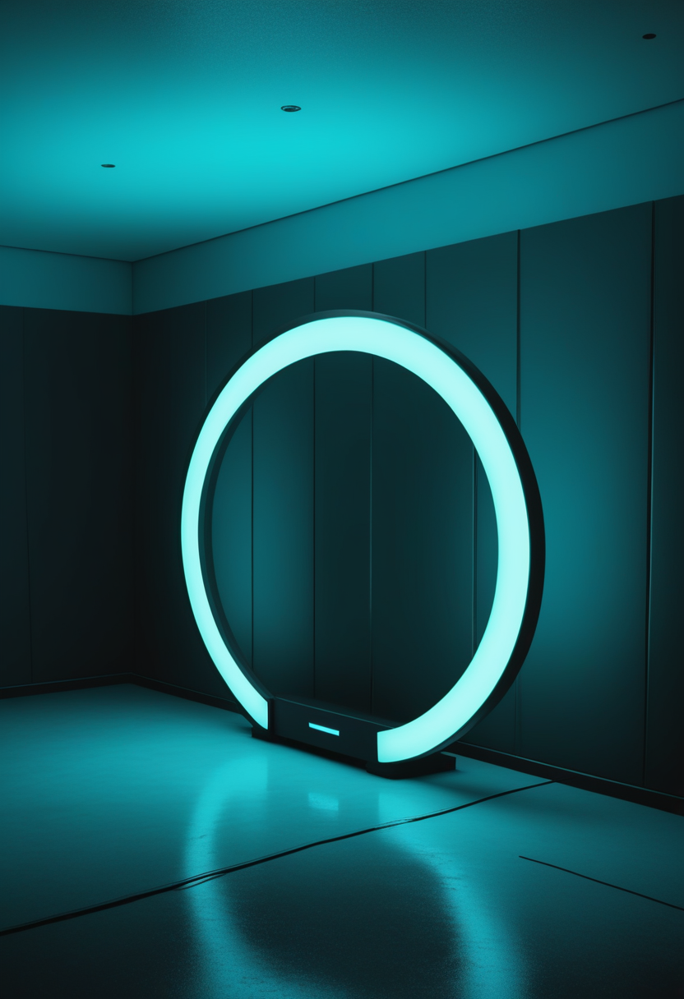
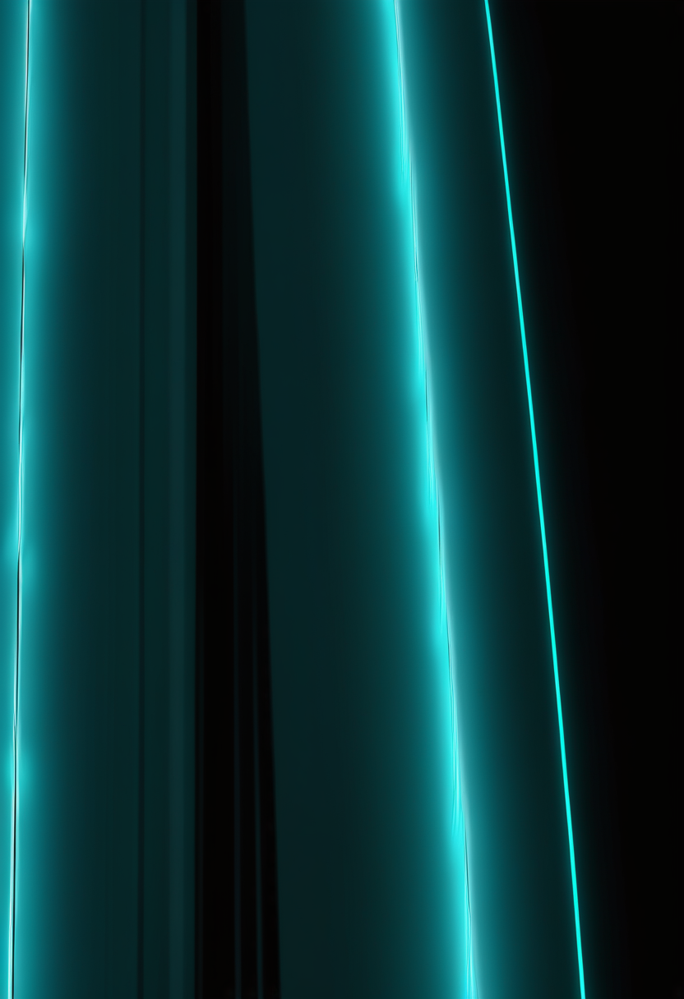
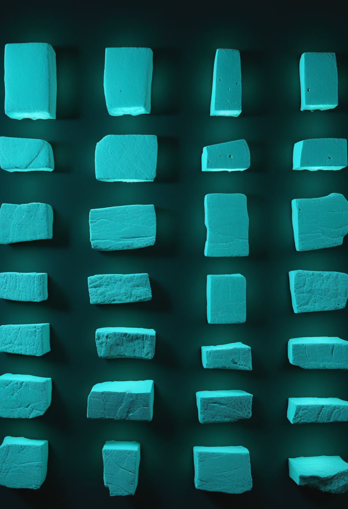

月曜日の便り。今日は素材提供が無く、自分で5つの領域を調べて一号分を組んだ。目玉はジェイムズ・ウェッブ宇宙望遠鏡が特定した、観測史上最も遠い高速電波バースト(FRB)。地上の望遠鏡には『何もない』ように見えた場所に、実は宇宙年齢約30億年の頃にできた小さな銀河があった。畏敬の章ではこれに加え、ハッブルが土星の南極に見つけた前例のない『十角形』の大気波も届ける。基盤の章では、ナイジェリアのエボラ初症例の接触者44人の大半が医療従事者だったことと、アフリカCDCが10月28日に緊急閣僚会合を開く計画を。自由の章ではBCI企業Paradromicsが医療機器大手シーメンス・ヘルスィニアーズと組み、埋め込み前の画像診断プラットフォームづくりに動き出したことを。命の章ではCure SMAの調査データが、生後3週間以内の治療開始が運動発達に与える影響を論文として発表したことを。美の章では、キケロの手紙に出てくる陶器の産地と一致する2100年前の沈没船と、疫病の記録を含む3400年前のヒッタイト王室文書庫、2つの考古学的発見を取り上げる。
南アフリカのMeerKAT電波望遠鏡が2024年3月4日に捉えた高速電波バースト『FRB 20240304B』。わずか数ミリ秒の電波の閃光だが、当初から極めて遠方由来であることが示唆されていた。シドニー大学のマニーシャ・カレブ氏らの研究チームがジェイムズ・ウェッブ宇宙望遠鏡の近赤外線カメラ(NIRCam)でこの方向を観測したところ、地上の望遠鏡には何も見えなかった場所に、活発に星を作っている小さな矮小銀河が浮かび上がった。分光観測から導かれた赤方偏移は2.148で、距離は約106億光年、光が発せられたのは宇宙誕生から約30億年後にあたる。これまで知られていたFRBの距離記録を2倍以上更新した。研究成果は10月8日、学術誌Scienceに掲載された。FRBの起源は謎が多く、マグネター(強磁場の中性子星)説が有力視されてきたが、今回のような若く小さな銀河で起きている例が増えれば、起源の理解はさらに書き換わる可能性がある。
Cure SMAは10月21日、同団体が2017年から毎年実施している患者・家族報告調査『Community Update Survey』の2020〜2024年分データを解析した論文の発表を発表した(学術誌Neurology and Therapy、2026年4月号、Lawrence氏ら)。SMN2コピー数2つ以下の小児を対象に、より高い運動マイルストーンに到達する確率を3つの要因で比較している。生後3週間以内に疾患修飾療法を開始した子どもは、生後4か月以降に開始した子どもよりオッズが13.4倍。出生前診断または新生児スクリーニングで見つかった子どもは、症状が出てから診断された子どもよりオッズが8.1倍。複数の治療を組み合わせた子どもは、単剤のみの子どもよりオッズが2.4倍。10月23日号で報じたAANEM学会発表(独歩率73.2%対36.7%)と同じ調査データに基づく別の切り口の解析で、『早ければ早いほど、組み合わせれば組み合わせるほど』という傾向を数値でさらに裏付けた。
独歩率という臨床の物差しに続き、オッズ比という統計の物差しが同じ結論を指す ― 『早く見つけ、早く始め、組み合わせる』ことの効果は、調査の切り口を変えても崩れない。
埋め込み型BCI企業Paradromicsは10月19日、医療機器大手シーメンス・ヘルスィニアーズと、BCI専用の多モード画像診断プラットフォームを構築する協力を発表した。狙いは患者評価・手術計画・埋め込み・長期経過観察という治療の全工程を一つの画像診断ワークフローでつなぐこと。構造MRI・機能的MRI(fMRI)・血管造影・CTを組み合わせ、Paradromicsが既にシーメンス製スキャナーで運用しているプロトコルを土台にする。マサチューセッツ総合病院ブリガムのダニエル・ルービン医師ら臨床研究者とも連携し、当初は発話運動機能を焦点とする。Paradromicsは最近、運動神経疾患の患者を対象とした実行可能性試験で自社のBCI『Connexus』の最初の埋め込みを完了しており、その際も電極の配置をfMRIが導いたという。CEOはこの協力の狙いを『手術前に正しい神経標的を特定すること』と説明している。
埋め込む前に『どこを狙うか』を精密に決める仕組みづくりが、速さの記録や承認の数とは別の軸でBCIの実用化を進めている。手術そのものより、手術の『前』が勝負になってきた。

ナイジェリアで確認された初症例(ウガンダから到着した女性)について、ナイジェリアCDCのオディアノセン・エヒアクハメン氏によると、追跡中の接触者44人の大半は医療従事者で、患者の配偶者(スイス国籍)も含まれる。患者は10月5日に入国、7日に発症、マラリアとして治療を受けた後に医師が疑いを強めたという経緯も新たに判明した。アフリカCDCのジャン・カセヤ所長は、大陸全体の対応を強化するための『臨時オンライン会合』を10月28日に開くと表明。今回の流行は5月にコンゴ民主共和国で始まって以降、9,500人超が感染し致死率は約半分に達する、史上最も速く広がったエボラ流行になっているとされる。ウガンダは自国での感染を改めて否定しており、感染地の特定には至っていない。
感染地の特定という『過去』の対立は解けないまま、接触者追跡という『現在』の作業と、10月28日の会合という『未来』の一手が同時に動いている。史上最速という形容がついた流行は、どこで始まったかより、どこで止めるかが問われている。
南アフリカのMeerKAT電波望遠鏡が2024年3月4日に検出した高速電波バースト『FRB 20240304B』について、シドニー大学のマニーシャ・カレブ氏らがジェイムズ・ウェッブ宇宙望遠鏡で追跡観測した。地上の望遠鏡には何も見えなかった方向に、活発に星を形成する小さな矮小銀河が浮かび上がり、分光観測による赤方偏移2.148・距離約106億光年(宇宙誕生から約30億年後に発せられた光)と判明した。これまでの記録を2倍以上更新する最遠方のFRBとなる。成果は10月8日、Science誌に掲載された。

ハッブル宇宙望遠鏡の長期観測プログラムOPALのデータから、土星の南極付近(南緯63度あたり)を囲む十角形(デカゴン)状の大気の波が確認された。土星の北極には有名な六角形の渦があるが、南極にこれほど整った多角形のジェット構造が見つかるのは初めて。アマチュア天文家が2024年の画像で最初に気付いた淡い模様が、2025年8〜9月にかけてはっきりした形に成長したという。バスク大学のアグスティン・サンチェス=ラベガ氏らの研究チームによると、十角形の頂点の位置は32日周期で振動しており、ジェット気流の屈曲か、北側にある高気圧性の渦が原因である可能性が指摘されている。観測波長によって見える位置がわずかに変わることから、大気の異なる高度の層を捉えていることも示された。成果は学術誌Science Advancesに掲載された。
106億光年先の銀河も、お隣の土星の南極も、見方を変えただけで新しい形が浮かび上がった。遠いものも近いものも、まだ見つかっていない形が残っている。
トルコ文化観光省は、アンタルヤ県クムルジャ郡アドラサン沖(水深42〜55m)で、紀元前1世紀半ばと推定される沈没船を発見したと発表した(9月28日)。船内には122種類の形・サイズに及ぶ数千点の陶器の皿や鉢が積まれており、アルスズ(古代ロドス)周辺で生産されたとみられる。木箱に詰める際に陶器の間を粘土で充填していたため、沈没時の破損を防ぎ長期間良好な状態で保存されたという。ローマの政治家キケロが紀元前50年に友人アティクスへ宛てた書簡で、ロドス産の陶器を注文したと記しており、今回の発見物と産地が一致する。船はロドス周辺を出てローマへ向かう途中、嵐に遭って浅瀬で沈んだと研究者は見ている。文化観光大臣メフメト・ヌリ・エルソイ氏の発表に基づく報道で、個々の考古学者名や学術論文への言及はまだない。

トルコ文化観光省は10月8日、シヴァス県ユルドゥズエリ郡のカヤルプナル遺跡(古代の都市シャムハ)で、ヒッタイトのトゥドハリヤ2世時代(約3,400年前)の王室文書庫を発見したと発表した。2026年の発掘で見つかった131点の粘土板・断片に、2025年に見つかった53点を合わせ、合計184点の文書庫になったという。ヒッタイト語とフルリ語で書かれた文書には占い・前兆・書簡・儀礼・祈祷が含まれ、ある粘土板は都市から都市へ広がった高熱の疫病を記録し、別の一枚は幼い王女の死とその葬送儀礼を記しているという。発掘を率いるコチ大学の考古学者チーイデム・マネル氏は2021年から同遺跡を調査しており、大臣は『21世紀に見つかったヒッタイト文書庫として最も完全なもの』と評した。
陶器の産地を手紙の記述と結びつけ、粘土板の断片を一つの文書庫へ組み直す ― どちらも『失われた文脈を取り戻す』作業だ。3000年以上前の疫病や交易の記録は、今の私たちが読み解いて初めて、もう一度意味を持つ。
月曜日の便り。今日は素材提供が無く、5つの領域を自分で調べて一号分を組んだ。畏敬の章では、ジェイムズ・ウェッブ宇宙望遠鏡が観測史上最も遠い高速電波バーストの正体を特定したことと、ハッブルが土星の南極に見つけた前例のない十角形の大気波を届けた。基盤の章では、ナイジェリアのエボラ接触者44人の大半が医療従事者だったことと、アフリカCDCが10月28日に緊急閣僚会合を開く計画を伝えた。自由の章では、BCI企業Paradromicsがシーメンス・ヘルスィニアーズと組み、埋め込み前の画像診断プラットフォームづくりに動き出したことを取り上げた。命の章では、Cure SMAの調査データが運動発達への3つの要因(早期治療・早期診断・多剤併用)の効果を論文として示したことを届けた。美の章では、キケロの手紙と産地が一致する2100年前の沈没船と、疫病の記録を含む3400年前のヒッタイト王室文書庫、2つの考古学的発見を伝えた。
では、また明日の朝に。 — JaH